Mobility · Product · Service design
Pathang Mobility
A single-occupant autonomous pod for campus commutes
Objective
To design a single-occupant autonomous micro-mobility device, and the on-demand service around it, for the trip a campus actually runs on — a kilometre or two between a department and a library, in monsoon rain or summer heat.
The approach
- Frame the gap
- Research the campus
- Design, build, break, test
- Design the service around it
01 The gap
Shareable mobility in India is built for the city commute. Intra-campus movement gets those same vehicles rebranded rather than vehicles designed for it — so the trips that make up a campus day are served by scooters with nowhere covered to park, rickshaws that vanish at peak hour, and a long walk when it rains.
Benchmarking the usual options made the shape of the gap clear. A scooter has range but no weather protection and nowhere secure to leave it. A hoverboard or skateboard is portable but useless on a wet path with a laptop bag. Nothing on the market is built for a two-kilometre trip taken four times a day, by someone carrying something, on roads that belong to a single institution.
That last point is the opening. A campus is a closed, mapped, low-speed environment with one owner — the conditions under which autonomy is tractable today, and the conditions almost no commercial service is designed around.
02 Who it is for
Four personas came out of the questionnaire and the interviews. A professor who drives because parking is a fight. A lecturer who scooters in and arrives soaked through the monsoon. An assistant who books auto-rickshaws by phone and waits past the point of usefulness. An administrator weighing fuel cost against the time a trip takes.
Their frustrations rhyme: no covered parking, no reliable charging, nothing weather-protected, and a peak hour where the available options simply stop being available. None of them are asking for a faster vehicle. They are asking for a trip that is predictable.
The map of who the service touches runs well past the riders — security has to admit an autonomous vehicle to a campus, maintenance has to keep it charged, and the transportation department has to own it.
Stakeholder map
Stakeholder map
Primary stakeholders
- Faculty with varied mobility needs
- Administrative staff making frequent intra-campus trips
- Campus transportation department
- Vehicle operators and fleet managers
- Platform developers
Secondary stakeholders
- Campus security — safety protocols and access
- IT department — connectivity and data
- Maintenance teams — upkeep and charging
- Facility management
- Vendors and shop owners
Tertiary stakeholders
- Technology vendors and software developers
- Emergency services
- Campus infrastructure authorities
- Local transport authorities
- Material suppliers
03 How it was run
Two tracks ran alongside each other — one for the vehicle, one for the service it would sit inside. The vehicle track was an agile loop adapted to a one-person project, with benchmarking folded into each pass rather than done once at the start. The service track followed the usual blueprint sequence.
They are drawn separately below because they ran at different speeds. The vehicle went all the way to a fabricated rig that could be ridden. The service stopped at a blueprint.
Research methodology
Vehicle design methodology
Insights from secondary and primary research
Competitive bench marking
Mind mapping
Brainstorming with stakeholders
Detailed sketch renders and scenarios
Crazy 8s and random-word ideation
Form evaluation against product benchmarks
Human–machine interaction
Scale models to evaluate the form
Colour, material, finish
Service design methodology
Journey mapping
Looking past the interface
Co-designing and co-creating
Prioritising ideas
The MaaS platform
Designing a holistic system
Analysing every touchpoint
Finalising the blueprint
Interface testing with users
UX analytics
04 Concept and form
Concept 3 was taken forward: a three-wheel delta layout on a lightweight aluminium tube frame, front-wheel drive, with a foldable seat and the battery set at the front for weight distribution and access.
The delta arrangement — one wheel forward, two behind — gives the stability a standing scooter lacks without the width of a four-wheeler on a footpath. The frame collapses, which is the part that actually answers the research: a vehicle that folds is one you can leave at the kerb or carry inside, rather than one that needs a parking space the campus does not have.


05 Prototyping
Three passes before anything was cut. Body storming with users to find where the collapsed frame would sit and how far it had to clear them — done with a mock frame and an office chair, which is cheap and tells you more about reach and clearance than a drawing does.
Then a 1:5 model in sun board to judge the form in the round, and concept visualisation to run colour and proportion variations quickly before committing to steel.


06 Fabrication
Two rectangular mild-steel tubes from an engineering works supplier, taken to a welder and built into the collapsing mechanism drawn in CAD. Steel rather than the specified aluminium, because the rig exists to test whether the mechanism works at all — not to hit the weight target.
It was built in five parts: the collapsible mechanism, the front fork, the handlebar, the drivetrain, and the motor mounting with the powertrain. Each one had to be fitted, trial-assembled, and in several cases re-cut.
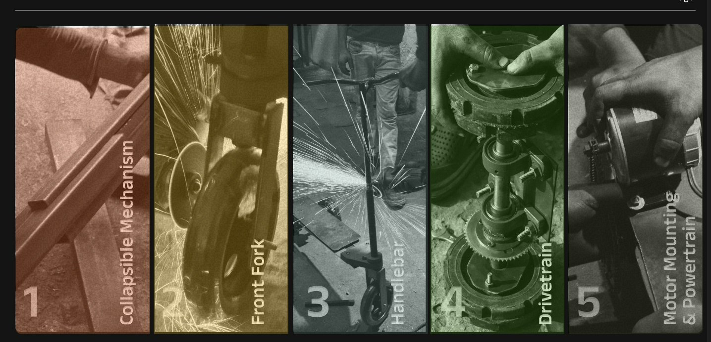
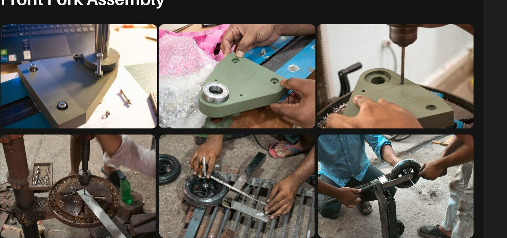
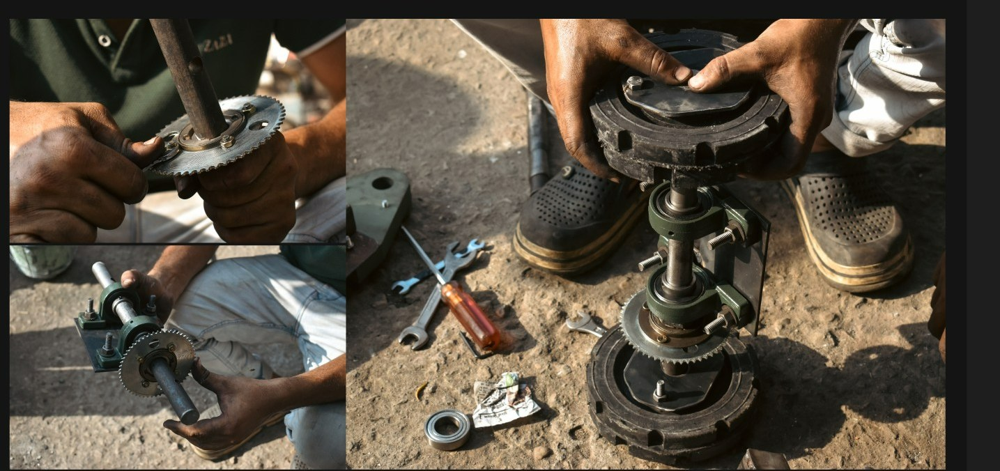
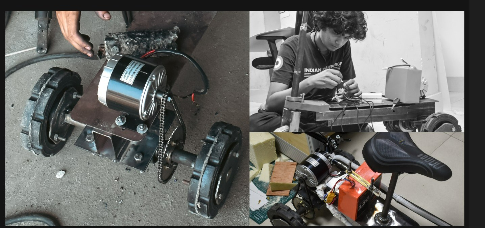
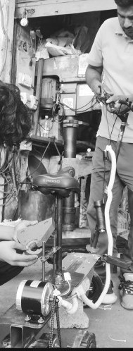
07 Failure identification
Before the rig went anywhere, the obvious weak points were found and recorded. The collapsing joint is the whole idea of the vehicle and also the one part carrying a rider’s weight through a hinge — so it is where the design is most exposed.
Documenting the failures first, rather than after a ride went wrong, is what made the testing worth doing: it meant going out with a list of things to watch rather than a hope that it would hold.

08 Testing
The rig was ridden on campus roads by several people of different heights and builds. That is where the rest of it surfaced — the parts of the mechanism that bound, flexed or sat wrong once there was a real rider on it, and the difference between a frame that folds on a bench and one that folds after a trip.
It is a working rig, not a finished vehicle, and it is honest to say so. What it proves is that the collapsing delta layout can carry a person; what it does not prove is range, weather sealing, or anything autonomous.


09 The service
The vehicle is half of it. A pod that folds is useless if finding one, paying for it and leaving it somewhere sensible is harder than walking. So the service was designed as one piece with the product: four ways to use a Patang, a single account behind them, and an interface built from a system rather than screen by screen.
Everything below stops short of deployment. None of it was released or tested with live users — it is the design, not a running service.
What the service offers
Quick ride
- Point to point, paid per trip
- Fare fixed before you request
- From ₹10 across the campus loop
Rental
- Hourly or daily, keep the Patang with you
- Lite or max storage
- From ₹35 an hour
Lease & custom
- Long-term allocation for a department
- Build a Patang to a specification
- Handled off-app, booked through the same account


The design system
Rebuilt from the wireframes as an atomic system rather than a set of screens. Atoms are the things with no smaller part — a colour, a step on the type scale, one icon. Molecules put those together into something you can use. Organisms assemble molecules into a working piece of a screen. The screens that follow are only those organisms arranged.
Working this way is what lets the rider app, the in-pod display and the operator console look like one product despite being three different problems — a phone in sunlight, a fixed screen at arm’s length, and a desk monitor watched for hours. The two sections after this take those other surfaces in turn.
Colour
White on signal red measures 3.86:1 — under AA for body text, so the pairing is held to large labels and fills, and anything smaller sits on ink or sheet.
Type scale
Radii
Icons on a 24px grid, 1.8 stroke
Search. Pick-up is assumed, destination is asked.
Mode chips for the four ways the service can be used.
Place row: icon, name, qualifier, and the one number that matters.
State badges and progress, shared by the rider app and the console.
Vehicle chooser: three place rows, one decision.
Arrival block: what happens next, and what it costs.


10 Vehicle interactions
The screen inside a Patang has a different job to the one in your hand. There is no driver to read it, the rider is moving, and the whole thing is glanced at rather than used. So it carries three states and almost nothing else: unlocked and confirming where you are going, navigating, and arriving.
Everything is sized to be read at arm’s length in daylight. Speed is the largest element on the screen because it is the only number that matters continuously; fare and distance sit in a card to one side and update quietly. The single primary action changes with the state, and there is never more than one of them.
The arrival state does the thing a driverless vehicle has to do and a taxi does not: it tells you where to leave the pod. Pull in on the left, past the guard post, bay 2 is free.
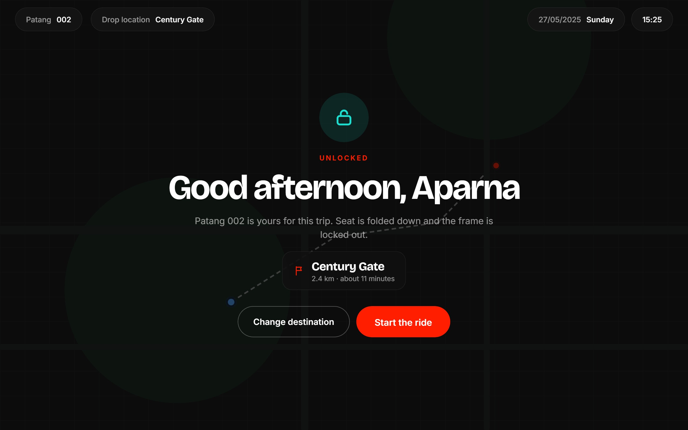
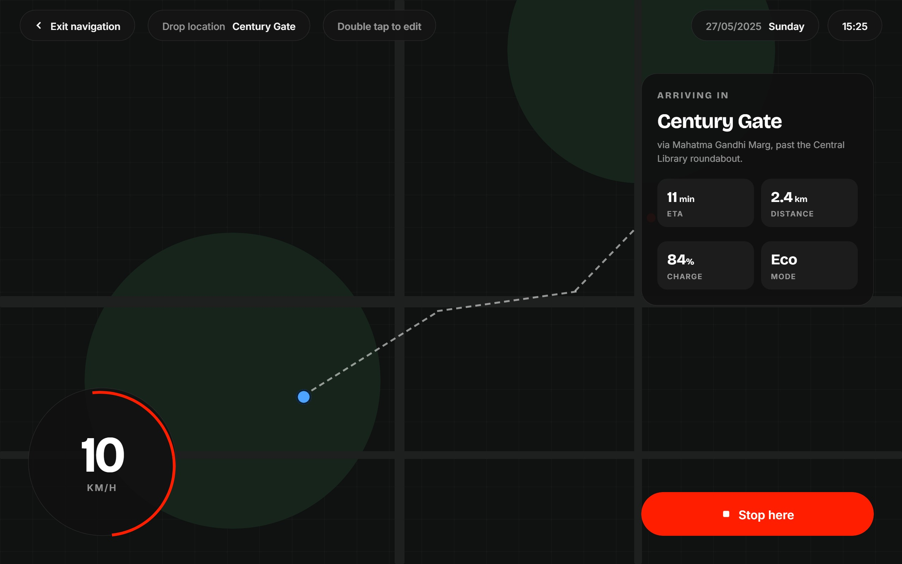
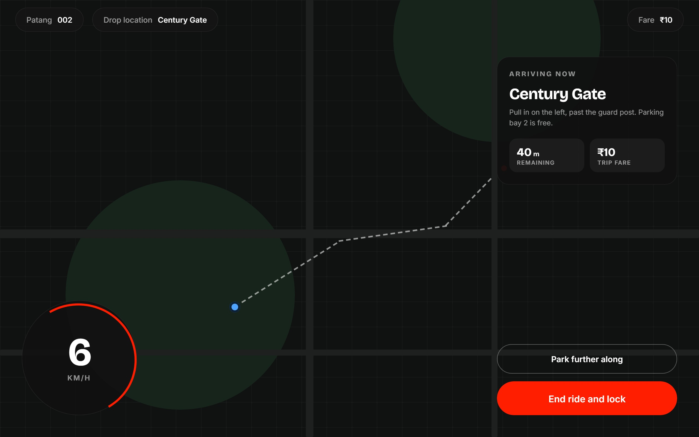
11 Fleet management
Twenty-four vehicles, one operator, a whole working day. The console is the inverse of the rider app in every way that matters: light rather than dark, dense rather than spare, built to be watched for hours instead of glanced at for seconds. It shares the same tokens, type roles and state badges, which is what keeps it recognisably the same product.
It is organised around the question an operator actually has, which is never what the fleet is doing but what needs them. The overview answers that in four numbers. The pod view answers it for one vehicle, with charge, range, trips this week and the maintenance history that explains why it keeps coming back.
The incident log carries a second column most dashboards leave out: what the system already did about it. Rerouting a pod that fell below twenty per cent, holding a vehicle with a stiff fold out of service rather than letting it be booked again. Someone watching two dozen vehicles needs to know what has been handled, not only what happened. The console ships in both appearances, switched from the foot of the rail, because a control room is not always a bright room.

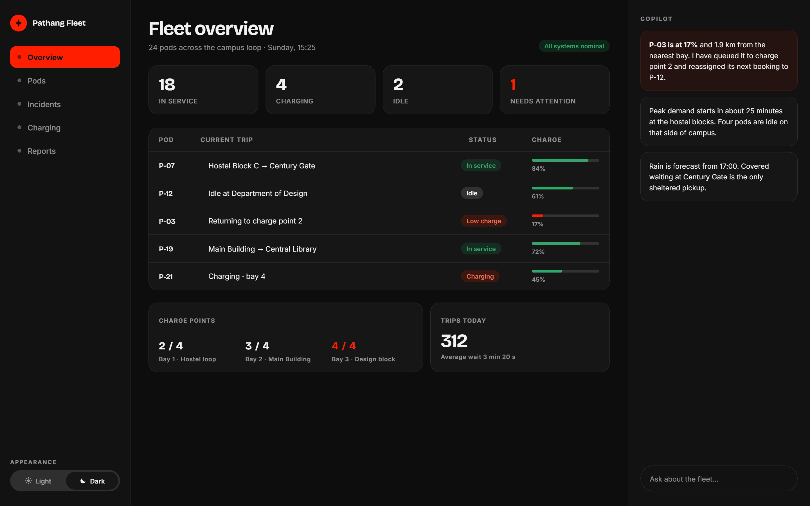

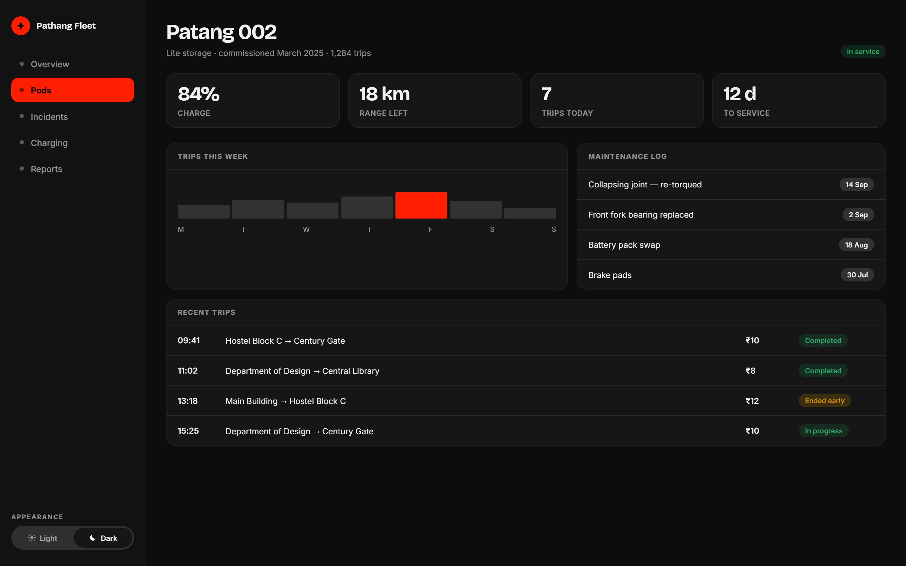

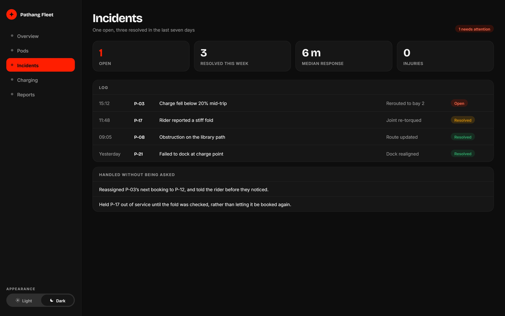